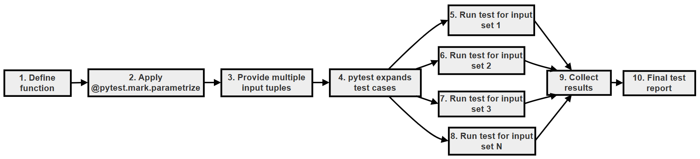

Project: The "Micro-Precision" Tax Calculator (Using Parameterized Testing)¶
This project follows one small function, a 10% tax calculator, through three rounds of testing. Each round fixes a problem found in the one before:
- Repetitive tests: one test function per price. This works, but it does not scale, and one of the tests fails in a surprising way.
- Parameterized tests: one test function with a list of prices, using
@pytest.mark.parametrize. The repetition is gone, but the surprising failure remains. - Parameterized tests with
pytest.approx(): the surprising failure is explained and fixed.
Along the way you will learn why computers cannot store most decimal numbers exactly (a floating-point issue that affects every programming language, not just Python), how to give each test case a readable name with ids, and what a real money application should do about rounding.
This project brings together two ideas from this chapter: writing many tests without repeating code, and comparing results correctly. Both are everyday skills for anyone writing Python tests.
Table of Contents¶
- Project: The "Micro-Precision" Tax Calculator (Using Parameterized Testing)
- Key Terms Used on This Page
- 1. Problem Statement
- 2. Application Script (Which Is to Be Tested)
- 3. First Attempt: Repetitive Tests, Not Using Parameterized Testing (Bad Practice)
- 4. Solution: Parameterized Testing
- 5. What pytest Does Internally
- 6. Hidden Problem (Floating-Point Issue)
- 7. Concept Insight
- 8. Solution: pytest.approx Inside parametrize
- 9. Flowchart: Parametrized Testing and Execution
- 10. Tests Are Separate
- 11. Using ids in parametrize
- 12. What Should a Real Money Application Do?
- Scripts for This Page and How to Run Them
- Follow-Up Questions
- Summary
- Further Reading
Key Terms Used on This Page¶
| Term | Simple Meaning | Learn More |
|---|---|---|
| Parameterized testing | Running one test function many times, each time with a different set of input values | pytest: parametrize |
@pytest.mark.parametrize |
The pytest decorator that supplies the sets of values for a parameterized test | pytest: parametrize reference |
| Floating-point number (float) | Python's type for numbers with a decimal point, such as 1.10. It is stored in binary and is often slightly inexact |
Python tutorial: Floating-Point Arithmetic |
pytest.approx() |
A pytest helper that treats two numbers as equal if they are extremely close | pytest: pytest.approx |
| Tolerance | How big a difference is allowed before two numbers count as "not equal" | |
| Test ID | The name pytest gives each test case, shown in square brackets, such as test_tax_values[1.1-0.11] |
pytest: parametrize ids |
Decimal |
A Python type from the decimal module that stores decimal numbers exactly, often used for money |
Python docs: decimal |
1. Problem Statement¶
You are building a simple Point of Sale system (the software a shop uses at the checkout counter).
The system calculates tax using:
Tax rate = 10%
Your task is to test the function with many different inputs, efficiently, using parameterized testing.
2. Application Script (Which Is to Be Tested)¶
Save this as tax_calculator.py:
# tax_calculator.py
# The application code to be tested.
def calculate_tax(price):
# Step 1 - The tax rate is 10%, written as a decimal fraction
tax_rate = 0.10
# Step 2 - Tax is the price multiplied by the rate
return price * tax_rate
For example, calculate_tax(2.00) returns 0.2, which is 10% of 2.00.
3. First Attempt: Repetitive Tests, Not Using Parameterized Testing (Bad Practice)¶
Save this as test_tax_calculator.py in the same folder:
# test_tax_calculator.py
# First attempt: one separate test function for every price (repetitive).
# Run it with: pytest -v test_tax_calculator.py
# Step 1 - Import the function we want to test
from tax_calculator import calculate_tax
# Step 2 - Test case 1: a price of 1.00 should give a tax of 0.10 (10% of 1.00)
def test_tax_1():
assert calculate_tax(1.00) == 0.10
# Step 3 - Test case 2: a price of 1.10 should give a tax of 0.11 (10% of 1.10)
def test_tax_2():
assert calculate_tax(1.10) == 0.11
# Step 4 - Test case 3: a price of 2.00 should give a tax of 0.20 (10% of 2.00)
def test_tax_3():
assert calculate_tax(2.00) == 0.20
The Output¶
Run the following command in the terminal:
pytest -v test_tax_calculator.py
Output:
============================= test session starts ==============================
platform win32 -- Python 3.10.10, pytest-9.0.3, pluggy-1.6.0 -- C:\Users\Anurag Gupta\AppData\Local\Programs\Python\Python310\python.exe
cachedir: .pytest_cache
rootdir: C:\tax-demo
plugins: anyio-4.12.1
collected 3 items
test_tax_calculator.py::test_tax_1 PASSED [ 33%]
test_tax_calculator.py::test_tax_2 FAILED [ 66%]
test_tax_calculator.py::test_tax_3 PASSED [100%]
=================================== FAILURES ===================================
__________________________________ test_tax_2 __________________________________
def test_tax_2():
> assert calculate_tax(1.10) == 0.11
E assert 0.11000000000000001 == 0.11
E + where 0.11000000000000001 = calculate_tax(1.1)
test_tax_calculator.py:16: AssertionError
=========================== short test summary info ============================
FAILED test_tax_calculator.py::test_tax_2 - assert 0.11000000000000001 == 0.11
========================= 1 failed, 2 passed in 0.01s ==========================
Problem¶
- Repetitive code: the three test functions are almost identical. Only the numbers change.
- Not scalable: testing 50 prices would need 50 functions.
- Hard to maintain: if the function name or the way of checking changes, every test must be edited.
- 1 test failed and 2 passed, because of an approximation issue. The function is doing exactly what it was written to do, but
1.10 * 0.10gives0.11000000000000001, not0.11. This would not be obvious without the test. We explain it in section 7.
4. Solution: Parameterized Testing¶
Save this as test_tax_calculator2.py:
# test_tax_calculator2.py
# This file contains tests for the calculate_tax function in tax_calculator.py.
# To run the tests in this file, use the command: pytest -v test_tax_calculator2.py
# Step 1 - Import pytest and the function under test
import pytest
from tax_calculator import calculate_tax
# Step 2 - Use @pytest.mark.parametrize to run the same test with several sets of data.
# "price, expected" names the two arguments the test function receives.
# The list of tuples holds the data sets: (input, expected result).
@pytest.mark.parametrize("price, expected", [
(1.00, 0.10),
(1.10, 0.11),
(2.00, 0.20),
(5.50, 0.55),
(10.00, 1.00),
])
# Step 3 - One test function, run once for each tuple above
def test_tax_values(price, expected):
assert calculate_tax(price) == expected
How it works:
"price, expected"names the two parameters that the test function will receive.- The list contains five tuples. Each tuple is one set of test data:
(input price, expected tax). - Pytest runs
test_tax_valuesonce for each tuple. Each time, it puts the first value intopriceand the second intoexpected.
Run:
pytest -v test_tax_calculator2.py
Output:
============================= test session starts ==============================
platform win32 -- Python 3.10.10, pytest-9.0.3, pluggy-1.6.0 -- C:\Users\Anurag Gupta\AppData\Local\Programs\Python\Python310\python.exe
cachedir: .pytest_cache
rootdir: C:\tax-demo
plugins: anyio-4.12.1
collected 5 items
test_tax_calculator2.py::test_tax_values[1.0-0.1] PASSED [ 20%]
test_tax_calculator2.py::test_tax_values[1.1-0.11] FAILED [ 40%]
test_tax_calculator2.py::test_tax_values[2.0-0.2] PASSED [ 60%]
test_tax_calculator2.py::test_tax_values[5.5-0.55] PASSED [ 80%]
test_tax_calculator2.py::test_tax_values[10.0-1.0] PASSED [100%]
=================================== FAILURES ===================================
__________________________ test_tax_values[1.1-0.11] ___________________________
price = 1.1, expected = 0.11
@pytest.mark.parametrize("price, expected", [
(1.00, 0.10),
(1.10, 0.11),
(2.00, 0.20),
(5.50, 0.55),
(10.00, 1.00),
])
# Step 3 - One test function, run once for each tuple above
def test_tax_values(price, expected):
> assert calculate_tax(price) == expected
E assert 0.11000000000000001 == 0.11
E + where 0.11000000000000001 = calculate_tax(1.1)
test_tax_calculator2.py:22: AssertionError
=========================== short test summary info ============================
FAILED test_tax_calculator2.py::test_tax_values[1.1-0.11] - assert 0.11000000...
========================= 1 failed, 4 passed in 0.02s ==========================
Result:
- It solves the problem of repetitive code. One short test function now checks five prices, and adding a sixth price needs just one more line.
- It does not solve the approximation problem. The case with a price of 1.1 still fails in exactly the same way.
5. What pytest Does Internally¶
Each tuple becomes a separate test case, with its own name (test ID):
| Input (price) | Expected | Test Run | Test ID Shown by pytest | Result with == |
|---|---|---|---|---|
| 1.00 | 0.10 | Test 1 | test_tax_values[1.0-0.1] |
PASSED |
| 1.10 | 0.11 | Test 2 | test_tax_values[1.1-0.11] |
FAILED |
| 2.00 | 0.20 | Test 3 | test_tax_values[2.0-0.2] |
PASSED |
| 5.50 | 0.55 | Test 4 | test_tax_values[5.5-0.55] |
PASSED |
| 10.00 | 1.00 | Test 5 | test_tax_values[10.0-1.0] |
PASSED |
Pytest builds each test ID from the parameter values, joined by -. Python writes 1.00 as 1.0 and 0.10 as 0.1, so that is how they appear in the IDs.
6. Hidden Problem (Floating-Point Issue)¶
As the output above shows, one of these tests fails:
assert 0.11000000000000001 == 0.11
It is the price of 1.10. The other four prices happen to give results that compare as equal. This is the dangerous part: the problem appears for some inputs and not for others, so it is easy to miss unless you test many values.
7. Concept Insight¶
Floating-point numbers are stored approximately, in binary (base 2).
In our everyday decimal system, some fractions cannot be written exactly. For example, 1/3 is 0.3333... and goes on for ever. In binary, the same happens to many simple decimal fractions, including 0.1. The computer stores the closest binary value it can, which is very slightly off.
So:
- 0.1 is not exactly 0.1 inside the computer.
- Small errors like this can add up, or show up, when numbers are multiplied or added.
- Comparing two floats with
==can therefore giveFalseeven when, on paper, the numbers are equal.
This is not a bug in Python. Almost every programming language stores floats in the same way. You can read more in the Python tutorial on floating-point arithmetic.
Save this as float_demo.py to see it for yourself:
# float_demo.py
# Why 1.10 * 0.10 is not exactly 0.11 in Python.
# Run it with: python float_demo.py
# Step 1 - The calculation used by calculate_tax(1.10)
result = 1.10 * 0.10
print("1.10 * 0.10 =", result)
print("Is it equal to 0.11?", result == 0.11)
# Step 2 - The same effect in a famous example
print("0.1 + 0.2 =", 0.1 + 0.2)
print("Is it equal to 0.3? ", 0.1 + 0.2 == 0.3)
# Step 3 - What is really stored for 0.1 (shown with 25 decimal places)
print("0.1 is stored as ", format(0.1, ".25f"))
# Step 4 - Way 1 to compare safely: allow a small tolerance
import math
print("math.isclose(result, 0.11):", math.isclose(result, 0.11))
# Step 5 - Way 2 for money: round to 2 decimal places
print("round(result, 2) =", round(result, 2))
# Step 6 - Way 3 for money: use the decimal module, which stores
# decimal fractions exactly when created from strings
from decimal import Decimal
exact = Decimal("1.10") * Decimal("0.10")
print("Decimal result =", exact)
print("Equal to Decimal('0.11')?", exact == Decimal("0.11"))
Run it with Python:
python float_demo.py
Output:
1.10 * 0.10 = 0.11000000000000001
Is it equal to 0.11? False
0.1 + 0.2 = 0.30000000000000004
Is it equal to 0.3? False
0.1 is stored as 0.1000000000000000055511151
math.isclose(result, 0.11): True
round(result, 2) = 0.11
Decimal result = 0.1100
Equal to Decimal('0.11')? True
What this shows:
1.10 * 0.10gives0.11000000000000001, which is not equal to0.11.- The famous example
0.1 + 0.2gives0.30000000000000004. - The number stored for
0.1is really0.1000000000000000055511151.... - There are three common ways to deal with this: compare with a small tolerance (
math.isclose(), orpytest.approx()in tests), round to 2 decimal places, or use theDecimaltype for money.
8. Solution: pytest.approx Inside parametrize¶
Save this as test_tax_calculator3.py:
# test_tax_calculator3.py
# This file contains tests for the calculate_tax function in tax_calculator.py.
# To run the tests in this file, use the command: pytest -v test_tax_calculator3.py
# Step 1 - Import pytest and the function under test
import pytest
from tax_calculator import calculate_tax
# Step 2 - The same five data sets as before
@pytest.mark.parametrize("price, expected", [
(1.00, 0.10),
(1.10, 0.11),
(2.00, 0.20),
(5.50, 0.55),
(10.00, 1.00),
])
# Step 3 - Compare with pytest.approx instead of plain ==
def test_tax_values(price, expected):
# pytest.approx allows a very small difference (tolerance),
# so tiny floating-point errors do not make the test fail.
assert calculate_tax(price) == pytest.approx(expected)
Run:
pytest -v test_tax_calculator3.py
Output:
============================= test session starts ==============================
platform win32 -- Python 3.10.10, pytest-9.0.3, pluggy-1.6.0 -- C:\Users\Anurag Gupta\AppData\Local\Programs\Python\Python310\python.exe
cachedir: .pytest_cache
rootdir: C:\tax-demo
plugins: anyio-4.12.1
collected 5 items
test_tax_calculator3.py::test_tax_values[1.0-0.1] PASSED [ 20%]
test_tax_calculator3.py::test_tax_values[1.1-0.11] PASSED [ 40%]
test_tax_calculator3.py::test_tax_values[2.0-0.2] PASSED [ 60%]
test_tax_calculator3.py::test_tax_values[5.5-0.55] PASSED [ 80%]
test_tax_calculator3.py::test_tax_values[10.0-1.0] PASSED [100%]
============================== 5 passed in 0.01s ===============================
Here the approximation problem is solved by using pytest.approx(). All five cases pass, including the price of 1.1.
How pytest.approx() decides:
- By default, it allows a difference of up to one millionth of the expected value (a relative tolerance of
1e-6). - For
0.11, that means anything from about0.1099999to0.1100001counts as equal.0.11000000000000001is well inside this range. - For an expected value of exactly
0, a relative tolerance would allow no difference at all, so it also allows a tiny absolute difference of1e-12. - You can choose your own tolerance, for example
pytest.approx(0.11, abs=0.005)allows any value within half a paisa or half a cent.
pytest.approx() is still strict enough to catch real mistakes. For example, 0.110001 == pytest.approx(0.11) is False.
9. Flowchart: Parametrized Testing and Execution¶

The same flow, step by step:
flowchart TD
A["1. pytest collects test_tax_values"] --> B["2. Read the parametrize list: 5 tuples"]
B --> C["3. Create 5 separate test cases"]
C --> D["4. Take the next test case"]
D --> E["5. Put the tuple values into price and expected"]
E --> F["6. Call calculate_tax(price)"]
F --> G{"7. Does the result equal approx(expected)?"}
G -- Yes --> H["8. Mark this case PASSED"]
G -- No --> I["9. Mark this case FAILED and record the details"]
H --> J{"10. More test cases?"}
I --> J
J -- Yes --> D
J -- No --> K["11. Print the summary"]
Notice that step 9 does not stop the run. It records the failure and moves on to the next case. The next section explains why this matters.
10. Tests Are Separate¶
Each parameter set becomes a SEPARATE test case.
So:
- One failure does NOT stop the others.
- All inputs are checked independently.
You can see this in the output of test_tax_calculator2.py: the case with a price of 1.1 failed, yet the cases for 2.0, 5.5 and 10.0 still ran and passed. The summary line 1 failed, 4 passed counts each case separately.
Compare this with a single test that checks all five prices in a loop. There, the first failing assert would stop the test, and the remaining prices would never be checked. You would only find the next problem after fixing the first one.
11. Using ids in parametrize¶
You can make the test report easier to read by giving each case a name with ids:
@pytest.mark.parametrize(
"price, expected",
[
(1.00, 0.10),
(1.10, 0.11),
],
ids=["basic price", "rounded price"], # Custom names for each test case
)
The list of ids must have exactly one name for each tuple, in the same order.
Here is a complete example with four cases. Save it as test_tax_calculator_ids.py:
# test_tax_calculator_ids.py
# Giving each parameter set a readable name with 'ids'.
# To run the tests in this file, use the command: pytest -v test_tax_calculator_ids.py
# Step 1 - Import pytest and the function under test
import pytest
from tax_calculator import calculate_tax
# Step 2 - One name in 'ids' for each tuple, in the same order
@pytest.mark.parametrize(
"price, expected",
[
(1.00, 0.10),
(1.10, 0.11),
(0.00, 0.00),
(999.99, 99.999),
],
ids=["basic price", "price with decimals", "free item", "large price"],
)
# Step 3 - The test itself is unchanged
def test_tax_values(price, expected):
assert calculate_tax(price) == pytest.approx(expected)
Run:
pytest -v test_tax_calculator_ids.py
Output:
============================= test session starts ==============================
platform win32 -- Python 3.10.10, pytest-9.0.3, pluggy-1.6.0 -- C:\Users\Anurag Gupta\AppData\Local\Programs\Python\Python310\python.exe
cachedir: .pytest_cache
rootdir: C:\tax-demo
plugins: anyio-4.12.1
collected 4 items
test_tax_calculator_ids.py::test_tax_values[basic price] PASSED [ 25%]
test_tax_calculator_ids.py::test_tax_values[price with decimals] PASSED [ 50%]
test_tax_calculator_ids.py::test_tax_values[free item] PASSED [ 75%]
test_tax_calculator_ids.py::test_tax_values[large price] PASSED [100%]
============================== 4 passed in 0.01s ===============================
Instead of test_tax_values[999.99-99.999], the report now says test_tax_values[large price]. When a test fails, a name that says what the case is about makes the report much easier to understand.
12. What Should a Real Money Application Do?¶
pytest.approx() fixes the test, not the calculation. In a real shop, a customer cannot pay 0.11000000000000001 in tax. For money, the code itself should usually produce exact amounts. Two common ways:
| Approach | Example | When to Use |
|---|---|---|
| Round the result | round(price * 0.10, 2) |
Simple programs, where rounding to 2 decimal places is enough |
Use Decimal |
Decimal("1.10") * Decimal("0.10") |
Real financial software, where every paisa or cent must be exact |
If calculate_tax() returned round(price * 0.10, 2), the plain == tests would pass too. Even so, pytest.approx() is the right tool whenever you compare floats in a test, because tiny differences can appear in many places.
Scripts for This Page and How to Run Them¶
All the scripts on this page are available in the tax-demo folder.
| File | What It Contains |
|---|---|
| tax_calculator.py | The calculate_tax() function being tested |
| test_tax_calculator.py | First attempt: three repetitive tests (one fails) |
| test_tax_calculator2.py | Parameterized tests with == (one fails) |
| test_tax_calculator3.py | Parameterized tests with pytest.approx() (all pass) |
| test_tax_calculator_ids.py | Parameterized tests with readable ids |
| float_demo.py | Shows the floating-point issue and three ways to handle it (run with python) |
To run them on your computer:
- Create a folder, for example
tax-demo, and save all six files in it. - Open the folder in VS Code (File > Open Folder...) and open the terminal (Terminal > New Terminal).
- Check that pytest is installed with
python -m pytest --version. If you seeNo module named pytest, install it withpython -m pip install pytest. - Run each test file with the command given in its section, for example
python -m pytest -v test_tax_calculator3.py. Runfloat_demo.pywithpython float_demo.py.
If you run all the test files together with python -m pytest -v, expect the summary 2 failed, 15 passed. The two failures are the price of 1.10 in the first and second attempts. They are there on purpose, to show the floating-point problem.
Detailed, step-by-step instructions (installing Python and VS Code, downloading files from GitHub and fixing common errors) are given in Running the Scripts on Your Computer.
Follow-Up Questions¶
Question 1: Adding a New Test Case¶
You want to test a price of 20.00 as well. What do you change in test_tax_calculator3.py?
Answer:
- Work out the expected tax: 10% of 20.00 is 2.00.
- Add one tuple to the list:
(20.00, 2.00),. - Nothing else changes. Pytest now creates six test cases instead of five.
Question 2: Why Not Use a Loop?¶
A student writes one test with a for loop over the five prices, each with an assert. What is lost compared with parametrize?
Answer:
- The loop is a single test. The first
assertthat fails stops it, so the remaining prices are never checked. - The report shows one test, not five, so you cannot see at a glance which prices passed and which failed.
- With
parametrize, each price is a separate test with its own test ID and its own PASSED or FAILED result.
Question 3: Does approx Hide Real Mistakes?¶
If calculate_tax(1.10) returned 0.110001 because of a bug, would pytest.approx(0.11) let it pass?
Answer:
- The default relative tolerance is one millionth of the expected value:
0.11 × 0.000001 = 0.00000011. - The difference here is
0.110001 − 0.11 = 0.000001, which is bigger than0.00000011. - So the test fails.
pytest.approx()only ignores differences far smaller than any real money amount.
Question 4: A Mismatched ids List¶
What happens if the parametrize list has two tuples but ids has only one name?
Answer:
- Pytest checks the counts when it collects the tests, before running anything.
- It stops with an error like:
In test_tax_values: 2 parameter sets specified, with different number of ids: 1. - Fix it by giving exactly one name for each tuple.
Summary¶
- Writing one test function per input is repetitive, hard to scale and hard to maintain.
@pytest.mark.parametrizeruns one test function with many sets of data. Each set becomes a separate test case, so one failure does not stop the others.- Floats are stored approximately in binary, so
1.10 * 0.10is0.11000000000000001, not0.11. - Compare floats in tests with
pytest.approx(), not with plain==. - Use
idsto give each test case a readable name. - For real money calculations, round to 2 decimal places or use
Decimal.